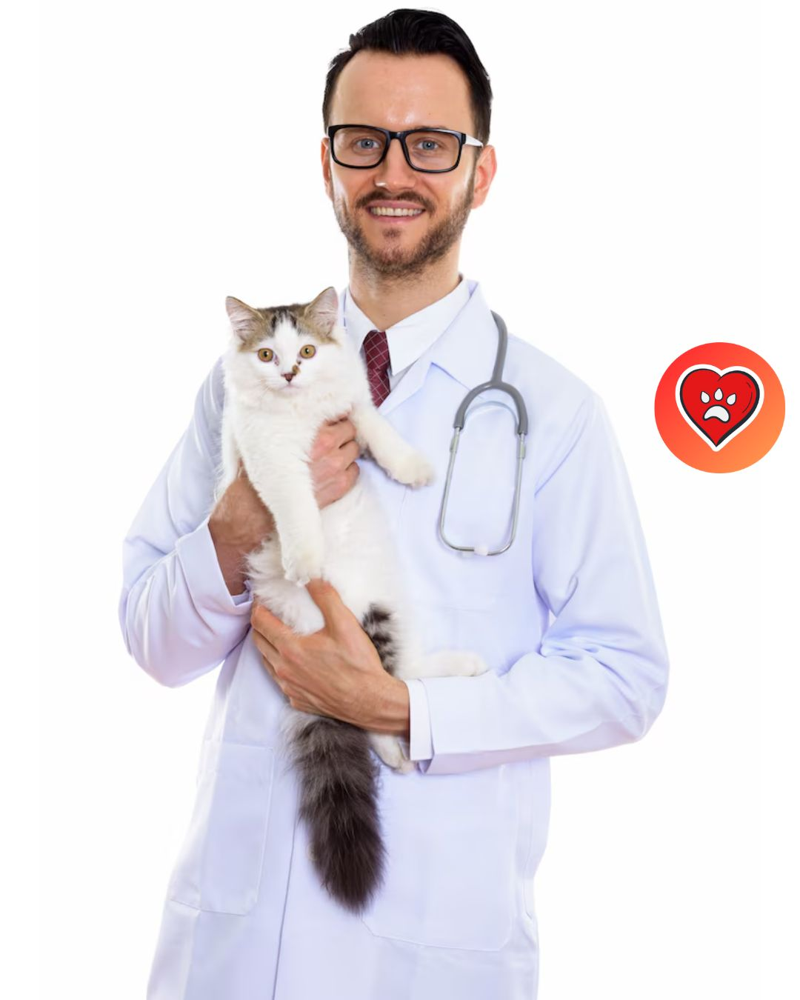

Nuestra Filosofía
Somos una clínica de urgencias veterinarias 24/7 comprometida con salvar vidas animales mediante tecnología y atención inmediata. Creemos en la digitalización para evitar demoras en emergencias.
Historia
Fundada en 2025, nacimos para revolucionar la gestión de historiales médicos veterinarios, garantizando tratamientos precisos y oportunos.
Conoce a Nuestro Equipo

Dr. Juan Pérez
Cirugía de Emergencia
12 años de experiencia en trauma animal.

Dra. Ana Gómez
Cardiología Veterinaria
Especialista en cuidados intensivos.
Dr. Luis Ramírez
Diagnóstico por Imágenes
Experto en radiología y ecografía.